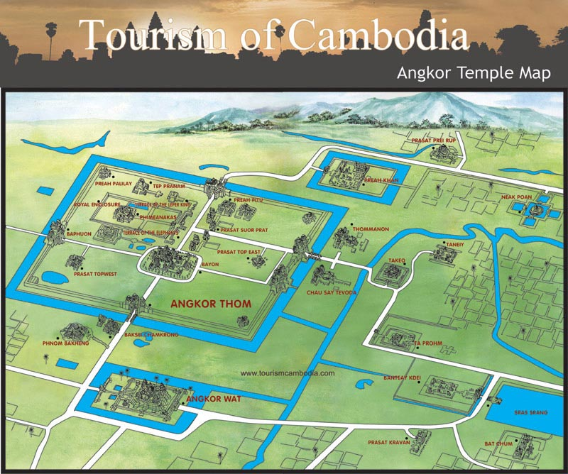
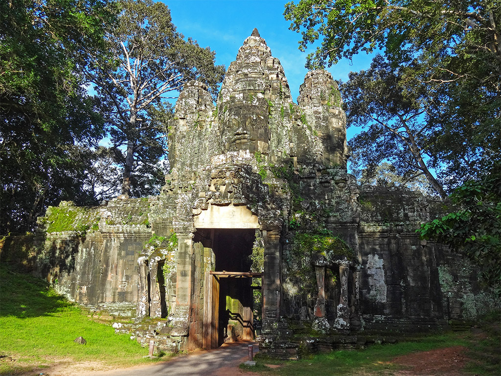
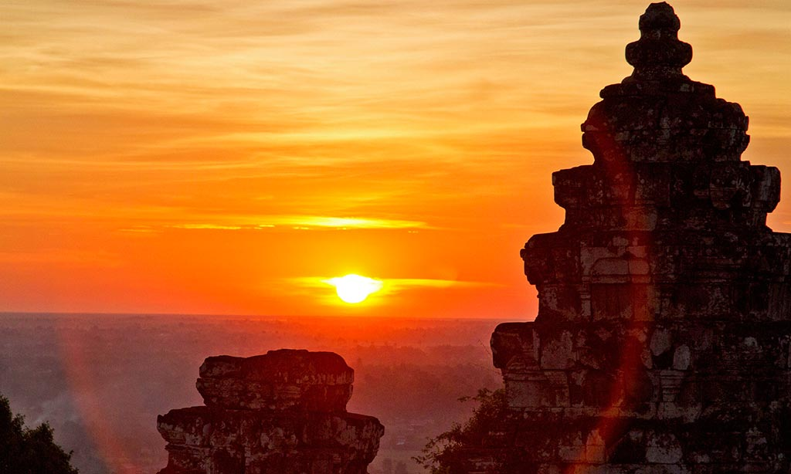
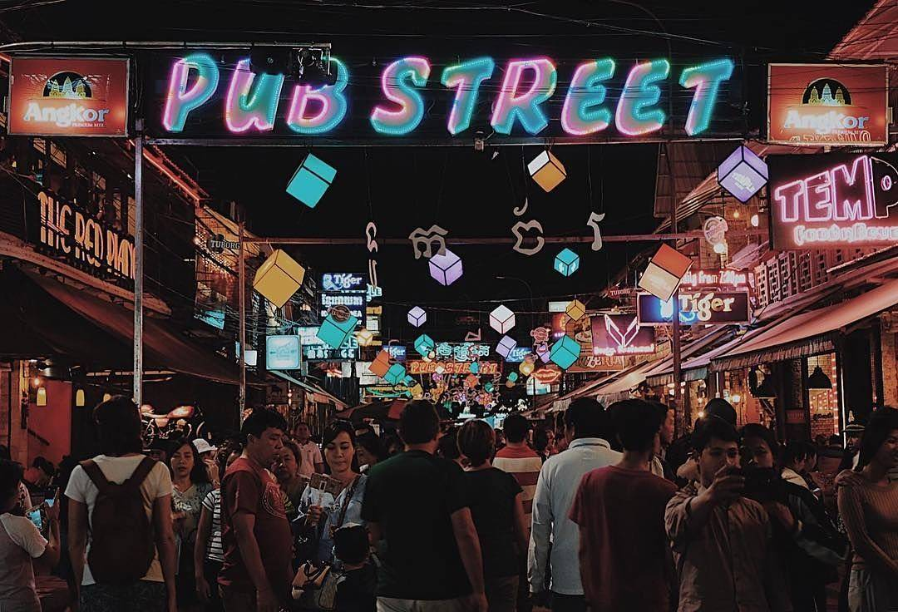

Siem Reap province is located in northwest Cambodia. It is the major tourist hub in Cambodia, as it is
the closest city to the world famous temples of Angkor (the Angkor temple complex is north of the city).The
provincial capital is also called Siem Reap and is located in the South of the province on the shores of
the Tonle Sap Lake, the greatest sweet water reserve in whole Southeast Asia. The name of the city literally
means Siamese defeated, referring to the victory of the Khmer Empire over the army of the Thai kingdom in the
17th century.
At the turn of the millennium Siem Reap was a Cambodian provincial town with few facilities, minor
surfaced roads and little in the way of nightlife. Tourism industry catered largely to hardy backpackers willing
to brave the tortuous road from the Thai border on the tailgate of a local pick-up truck. There were a couple of
large hotels and a handful of budget guesthouses. Tuk-tuks and taxis were non-existent and the trusty motodup
was the chosen means of touring the temples of Angkor.

Angkor Wat, in its beauty and state of preservation, is unrivaled. Its mightiness and magnificence
bespeak a pomp and a luxury surpassing that of a Pharaoh or a Shah Jahan, an impressiveness greater than
that of the Pyramids, an artistic distinctiveness as fine as that of the Taj Mahal. Angkor Wat is
located about six kilometers (four miles) north of Siem Reap, south of Angkor Thom. Entry and exit to
Angkor Wat can only be access from its west gate.
Angkor Wat was built in the first half of the 12th century (113-5BC). Estimated construction time of the
temple is 30 years by King Suryavarman II, dedicated to Vishnu (Hindu), replica of Angkor Thom style of
art.
Angkor Wat, the largest monument of the Angkor group and the best preserved, is an architectural
masterpiece. Its perfection in composition, balance, proportions, relief's and sculpture make it one of
the finest monuments in the world.
Wat is the Khmer name for temple (the French spelling is "vat "), which was probably added to "Angkor
"when it became a Theravada Buddhist monument, most likely in the sixteenth century. After 1432 when the
capital moved to Phnom Penh, Angkor Wat was cared for by Buddhist monks.
It is generally accepted that Angkor Wat was a funerary temple for King Suryavarman II and oriented to
the west to conform to the symbolism between the setting sun and death. The bas-reliefs, designed for
viewing from left to right in the order of Hindu funereal ritual, support this function.
The plan of Angkor Wat is difficult to grasp when walking through the monument because of the vastness.
Its complexity and beauty both attract and distract one's attention. From a distance Angkor Wat appears
to be a colossal mass of stone on one level with a long causeway leading to the center but close up it
is a series of elevated towers, covered galleries, chambers, porches and courtyards on different levels
linked by stairways.
The height of Angkor Wat from the ground to the top of the central tower is greater than it might
appear: 213 meters (699 feet), achieved with three rectangular or square levels (1-3) Each one is
progressively smaller and higher than the one below starting from the outer limits of the temple.
Covered galleries with columns define the boundaries of the first and second levels. The third level
supports five towers four in the corners and one in the middle and these is the most prominent
architectural feature of Angkor Wat. This arrangement is sometimes called a quincunx. Graduated tiers,
one rising above the other, give the towers a conical shape and, near the top, rows of lotuses taper to
a point.

Angkor Thom is undeniably an expression of the highest genius. It is, in three dimensions and on a scale
worthy of an entire nation, the materialization of Buddhist cosmology, representing ideas that only
great painters would dare to portray.
Angkor Thom, the last capital of the Khmer Empire, was a fortified cit enclosing residences of priest,
officials of the palace and military, as well as buildings for administering the kingdom. These
structures were built of wood and have perished but the remaining stone monuments testify that Angkor
Thom was indeed a "Great City" as its name implies. Temples inside the walls of the city described in
this article are Bayon, Phimeanakas, Baphuon,Terrace of the Elephants, Terrace of the Leper King, Prah
Palilay, Tep Pranam and Prasat Suor Prat.
The Royal Palace situated within the city of Angkor Thom is of an earlier date and belonged to kings of
the tenth and first half of the tenth and first half of the eleventh centuries. Although the foundations
and an enclosing wall around the palace with entry towers have been identified, little evidence remains
of the layout of the buildings inside the enclosure. This absence of archaeological evidence of the
royal buildings suggests that they were constructed of wood and have perished. The French ascertained a
general plan of the Royal Palace. It included the temple-mountain of Phimeanakas and surrounding pools
together with residences and buildings for administering the capital, which were probably at the back
of the enclosure. Jayavarman VII econstructed the original site of the Royal Palace Palace to erect the
city of Angkor Thom, which was centered on the temple of Bayon and surrounded by a wall. Zhou Daguan the
Chinese emissary, who provided the only first-hand account of the Khmer, described the splendor of Angkor Thom.
At the center of the Kingdom rises a Golden tower Bayon flanked by more than twenty lesser towers and
several hundred stone chambers. On the eastern side is a golden bridge guarded by two lions of gold, one
on each side, with eight golden Buddhas spaced along the stone chambers. North of the Golden Tower of
Bronze [Baphuon], higher even than the Golden tower. a truly astonishing spectacle. With more than ten
chambers at its base. A quarter of a mile further north is the residence of the King rising above his
private apartments is another tower of gold, These are the monuments which have caused merchants from
overseas to speak so often of "Cambodia the rich and noble."
Symbolically, Angkor Thom is a microcosm of the universe, divided into four parts by the main axes. The
temple of the Bayon is situated at the exact center of the axes and stands as the symbolical link
between heaven and earth. The wall enclosing the city of Angkor Thom represents the stonewall around the
universe and the mountain ranges around Meru. The surrounding moat (now dry) symbolizes the cosmic
ocean.

It is a testimony to the love of symmetry and balance which evolved its style....in pure simplicity of
rectangles its beauty is achieved. It is a pyramid mounting in terraces, five of them ...Below Bak-Keng
lays all the world of mystery, the world of the Khmer, more mysterious ever under its cover of
impenetrable verdure.
Phnom Bakheng is located 1,30 meters (4,265 feet) north of Angkor Wat and 400 meters (1,312 feet) south
of Angkor Thom.
Enter and leave Phnom Bakheng by climbing a long steep path with some steps on the east side of the
monument (height 67 meters, 220 feet) In the 1960 this summit was approached by elephant and, according
to a French visitor, the ascent was a promenade classic and very agreeable.
Arrive at the summit just before sunset for a panoramic view of Angkor and its environs. The golden hues
of the setting sun on this vista are a memorable sight. When Frenchman Henri Mouhot stood at this point
in 1859 he wrote in his diary: "Steps.. lead to the top of the mountain, whence is to be enjoyed a view
so beautiful and extensive, that it is not surprising that these people, who have shown so much taste
in their buildings, should have chosen it for a site."
It is possible to see: the five towers of Angkor Wat in the west, Phnom Krom to the southwest near the
Grand Lake, Phnom Bok in the northeast, Phnom Kulen in the east, and the West Baray.
Phnom Bakheng was built in late ninth to early tenth century by King Yasovarman dedicated to Siva
(Hindi).
After Yasovarman became king in 889, he founded his own capital, Tasoharapura, Northwest of Roluos and
built Bakheng as his state temple. The sites known today as Angkor and thus Bakheng is sometimes called
"The First Angkor". A square wall; each side of which is 4 kilometers (2.5 miles) long, surrounded the
city. A natural hill in the center distinguished the site.
This is most solitary place in all Angkor and the pleasantest. If it was truly the Mount Meru of the
gods, then they chose their habitation well. But if the Khmers had chanced to worship the Greek pantheon
instead of that of India, they would surely have built on Phnom Bakheng a temple to Apollo; for it is at
sunrise and sunset that you feel its most potent charm.
Here at the summit it is very still. The darkness has lost its intensity; and you stand in godlike
isolation on the roof of a world that seems to be floating in the sky, among stars peering faintly
through wisps of filmy cloud. The dawn comes so unobtrusively that you are unaware of it, until all in a
moment you realize that the world is no longer dark.
The sanctuaries and altars on the terrace have taken shape about you as if by enchantment; and far
below, vaguely as yet but gathering intensity with every second, the kingdom of the Khmers and the glory
thereof spreads out on every side to the very confines of the earth; or so it may well have seemed to
the King-god when he visited his sanctuary how many dawns ago.

Millions of tourists come to Siem Reap, Cambodia every year to experience the magic of Angkor Wat, but
when the sun goes down and the temples have been conquered, where is the place to be in Siem Reap? The
answer is clear: Pub Street.
Pub Street, officially titled Street 8, is the culinary and nightlife hub of Siem Reap sort of the
citys answer to Bangkoks famed Khao San Road. On Pub Street, youll find an assortment of restaurants
and bars, as well as entertaining street performers and some fantastic people watching.From 5 p.m.
onwards, the street is blocked off to motor traffic, making it a relaxing place to stroll and take in
the sights. You cant visit Siem Reap without stopping by Pub Street at least once, and you may just
love it so much youll make it your nightly haunt.
The recipe for a perfect night in Siem Reap. After an afternoon in Mad Monkey Siem Reaps pool and
enjoying drinks at their poolside bar, kick off your evening at the hostels Top Banana Rooftop Beach
Bar. It is complete with sand, $1 beers, and inexpensive cocktails and shots. Youll also enjoy beer
pong tables, great music, themed nights, and meet some of the best people in Siem Reap.
Keep the party going until the wee hours of the night by then heading to Pub Street, just a five-minute
away and filled with places to make this the most memorable night of your trip.
Pub Street may be known primarily for its nightlife, but its also a fantastic place to grab a bite to
eat any time of day. Considering Pub Street is such a popular tourist destination, meals are very
reasonably priced, generally ranging from about $4 to $8 U.S. for a main. Most of the restaurants menus
feature a mix of Western and Khmer foods, so no matter your tastes, youll find something that suits
you. Menus are displayed in front of each restaurant, so wander the street and browse the menus to take
your pick.
Cheap drinks, fun, young travelers, and beautiful, warm nights, Cambodia is one of the best places in
the world to have a night on the town. Siem Reap may be a relatively small city, but it still has a
nightlife scene thats raved about by visitors from all over the world. Pub Street, as well as its
surrounding streets, is easily the best part of Siem Reap for nightlife.
If Pub Street isnt enough for you, stop by Siem Reaps Angkor Night Market, running from 4 pm until
midnight, a bustling area packed with stalls selling handicrafts and souvenirs as well as a few other
spots for dining and drinking.Pub Street could keep you occupied for nights on end, but if youre
craving more, youll also find no shortage of restaurants and bars clustered around Pub Street. Go
exploring and find the perfect spot for your meal or night out. Pub Street is sure to bring you some of
the best memories from your Cambodia trip, so enjoy your time there, and make the most of your time in
Siem Reap!